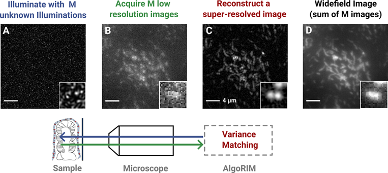
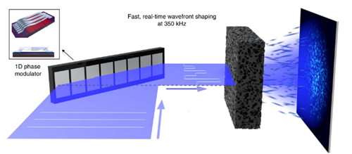
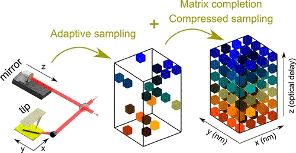
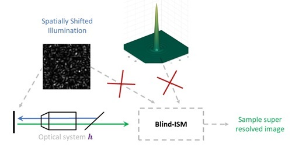

I'm Simon Labouesse. I am a researcher with a strong background in optics, photonics, and image processing. I have worked on various projects involving the development and optimization of optical imaging techniques, including fluorescence microscopy, optical fiber imaging, and hyperspectral imaging. My work has led to several innovations and improvements in imaging speed and resolution, with a focus on practical applications and real-time processing.
Below is a list of projects that interest me and where I have made contributions. These projects focus on scenarios where imaging is required despite not having full control over the optical system. They explore how prior knowledge about the system can be leveraged to enhance imaging performance.
Random Illumination Microscopy is a novel imaging technique used in the field of microscopy to enhance the resolution and contrast of biological samples. It utilizes the concept of Structured Illumination Microscopy (SIM) along with the integration of random patterns to overcome the limitations of traditional imaging techniques, including sensitivity to optical aberrations. By employing a random illumination pattern, RIM can achieve super-resolution imaging without the need for complex hardware setups or specialized fluorophores.
Relevant papers:
Complex optical media, such as multimode fibers, diffusers, or biological tissues, present significant challenges for imaging. Imaging through these media can be achieved by measuring the transmission matrix (TM). In some cases, even when the TM is unknown, certain properties of the medium, such as being thin or forward-scattering, allow for a memory effect that maintains input-output correlations. These correlations can be exploited for imaging or controlling light through the medium.
Relevant papers:
Scattering scanning near-field optical microscopy (s-SNOM) offers high-resolution spectroscopic imaging, but its conventional implementation is slow, especially for large fields of view and weak signals. Acquisition time and sampling rate can be significantly reduced using compressed sampling, matrix completion, and adaptive random sampling.
Relevant paper:
In Image Scanning Microscopy (ISM) an illumination spatially scans across the sample, and at each position, a widefield image is acquired. Blind-ISM enhances this technique by simultaneously estimating the point spread function (PSF), the sample, and the scanned illumination pattern directly from the acquired images. This approach increases robustness to aberrations in both the illumination and collection paths.

For more details about my activities, you can access my resume in English here and in French here.